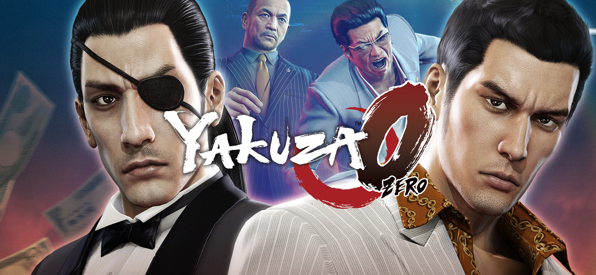

Yakuza 0 es una precuela de acción y aventura ambientada en el Japón de 1988 (época de la burbuja económica), que narra los orígenes de Kazuma Kiryu y Goro Majima. Mezcla una trama criminal dramática y seria con combates beat 'em up intensos y un sinfín de minijuegos y actividades secundarias absurdas en los distritos de Tokio y Osaka.
Yakuza 0 esta ambientado en diciembre de 1988 durante la burbuja económica japonesa, narra los orígenes de Kazuma Kiryu y Goro Majima. Kiryu, un joven yakuza de la familia Dojima en Kamurocho, es inculpado por un asesinato en un misterioso "lote baldío", mientras Majima busca redimirse en Sotenbori. Ambos se ven envueltos en una conspiración por el control de dicho terreno.
reseña en youtube